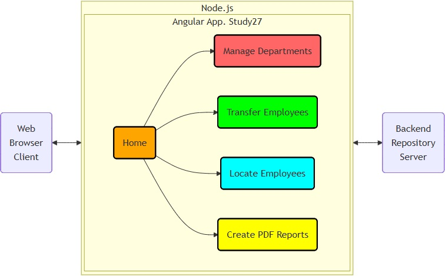

| Live Angular application demo ➔ Study27 (GitHub Pages) | ||
Project sections:
Back to the top of the page 1.1. The business logic
diagram.
This diagram contains links to web page screenshots.
1.1. The business logic
diagram.
This diagram contains links to web page screenshots.
1.2. The backend repository.
Local web storage is used alone or together with a backend repository on an external Node.js Express server.
Available backend repositories:
1.3. The TypeScript sources are located in the app
directory.
1.3.1. Sources in the 'Home' section directory:
1.3.2. Sources in the 'Manage' section directory:
1.3.3. Sources in the 'Transfer' section directory:
1.3.4. Sources in the 'Locate' section directory:
1.3.5. Sources in the 'Report' section directory:
1.3.6. Sources in the models directory:
1.3.7. Sources in the services directory:
1.4. Reports are generated using 'pdfmake'. Example reports:
Action:

 1. Use the batch file
"01 Angular on Docker build and run.bat" to build the images and start the containers.
1. Use the batch file
"01 Angular on Docker build and run.bat" to build the images and start the containers.
2. Use the web browser shortcut "11 Study27 on 8027.url" for the
'Study27' application.
2.1. Docker images are built using the following files:
Action:
1. Use the batch file
"02 Angular on local build and run.bat" to build and start the local application.
2. Use the batch file
"03 Angular lint and test.bat" to lint and start the Karma tests.
3. Use the web browser shortcut "12 Study27 on 4200.url"
for the application on port 4200 started with 'ng serve'.
3.1. The screenshot
shows the results of the Karma tests.
Action:
Use the batch file
"04 Cypress tests.bat" to start the Cypress tests.
4.1. The test scripts directory.
4.2. Some test screenshots generated by Cypress:
| Material Design 3 | However, this Angular Material project uses Material Design 2. |
| Angular Material UI components | These are UI components based on the Material Design specification. |
| Angular Material CDK | A set of behavioral primitives for building UI components. |
| HTTP Client | The Angular HTTP Client service. |
| pdfmake | The PDF document generation library. |
| Google Icons | These icons are used in the Material menu. |
| Angular CLI | The Angular CLI is a command-line interface tool. |
| Cypress | The front-end testing tool. |
| Karma | The test runner. |
| GitHub Pages | Creates a website directly from a repository on GitHub. |
| ARIA | Accessible Rich Internet Applications |
| CDK | Component Dev Kit |
| CSR | Client-side Rendering |
| ESM | ECMAScript Module |
| PWA | Progressive Web Application |
| SPA | Single Page Application |
| SSG | Static Site Generation |
| SSR | Server-Side Rendering |
{kind=link}